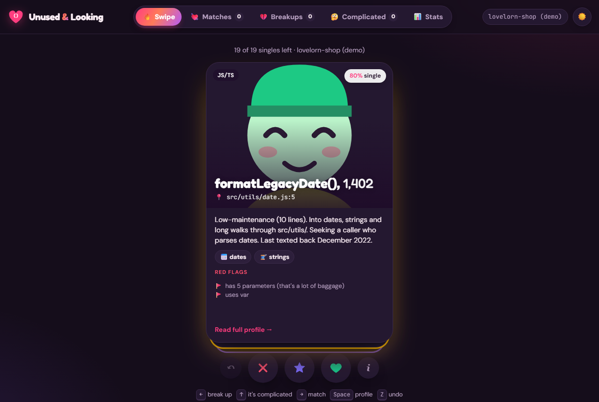

Dev tool · npm CLI + web app
Unused & Looking 💔
Finds functions nobody calls in JS/TS, Python, Go and Ruby, then gives each one a dating profile you can swipe. Swipe left to add it to a cleanup list, right to see duplicated logic elsewhere. Zero dependencies; the same analyser runs in Node and in the browser.